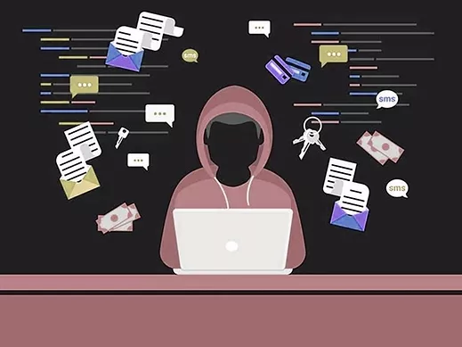

DELITOS INFORMÁTICOS
¿Qué es?
Los delitos informáticos o ciberdelitos son aquellas acciones que
se realizan a través de las nuevas tecnologías. También se
consideran aquellos en los que las nuevas tecnologías intervienen
como medio, objeto o como bien jurídico protegido. Con ello, los
criminales cometen delitos aprovechando el gran potencial de las
TIC superando barreras territoriales. Para poder crear sistemas de
protección y seguridad informática, es muy importante conocer los
delitos informáticos más comunes. Ya sea a nivel personal,
familiar o laboral, la importancia de ello es prevenir víctimas. A
continuación te explicamos los ciberdelitos que se cometen más a
menudo.

TIPOS DE DELITOS INFORMATICOS
MANIPULACIÓN DE LOS DATOS DE ENTRADA:
Se efectúa fijando un objetivo al funcionamiento del sistema
informático. El ejemplo más común es el fraude de que se hace
objeto a los cajeros automáticos mediante la falsificación de
instrucciones para la computadora en la fase de adquisición de
datos. Tradicionalmente esos fraudes se hacían a base de
tarjetas bancarias robadas; sin embargo, en la actualidad se
usan ampliamente equipo y programas de computadora
especializados para codificar información electrónica
falsificada en las bandas magnéticas de las tarjetas bancarias y
de las tarjetas de crédito.
MANIPULACIÓN INFORMÁTICA APROVECHANDO REPETICIONES
AUTOMÁTICAS DE LOS PROCESOS DE CÓMPUTO:
Es una técnica especializada que se denomina "técnica del
salchichón" en la que "rodajas muy finas" apenas perceptibles,
de transacciones financieras, se van sacando repetidamente de
una cuenta y se transfieren a otra.
FALSIFICACIÓN INFORMATICA COMO OBJETO: Cuando se alteran
datos de los documentos almacenados en forma computarizada.
FALSIFICACIÓN INFORMATICA COMO INSTRUMENTO: Las
computadoras pueden utilizarse también para efectuar
falsificaciones de documentos de uso comercial. Cuando empezó a
disponerse de fotocopiadoras computarizadas en color a base de
rayos láser surgió una nueva generación de falsificaciones o
alteraciones fraudulentas. Estas fotocopiadoras pueden hacer
copias de alta resolución, pueden modificar documentos e incluso
pueden crear documentos falsos sin tener que recurrir a un
original, y los documentos que producen son de tal calidad que
sólo un experto puede diferenciarlos de los documentos
auténticos.
SABOTAJE INFORMÁTICO: Es el acto de borrar, suprimir o
modificar sin autorización funciones o datos de computadora con
intención de obstaculizar el funcionamiento normal del sistema.
Las técnicas que permiten cometer sabotajes informáticos.
VIRUS: Es una serie de claves programáticas que pueden
adherirse a los programas legítimos y propagarse a otros
programas informáticos. Un virus puede ingresar en un sistema
por conducto de una pieza legítima de soporte lógico que ha
quedado infectada, así como utilizando el método del Caballo de
Troya.
GUSANOS: Se fabrica de forma análoga al virus con miras
a infiltrarlo en programas legítimos de procesamiento de datos o
para modificar o destruir los datos, pero es diferente del virus
porque no puede regenerarse.
En términos médicos podría decirse que un gusano es un tumor
benigno, mientras que el virus es un tumor maligno. Ahora bien,
las consecuencias del ataque de un gusano pueden ser tan graves
como las del ataque de un virus: por ejemplo, un programa gusano
que subsiguientemente se destruirá puede dar instrucciones a un
sistema informático de un banco para que transfiera
continuamente dinero a una cuenta ilícita.
BOMBA LÓGICA O CRONOLÓGICA: Exige conocimientos
especializados ya que requiere la programación de la destrucción
o modificación de datos en un momento dado del futuro. Ahora
bien, al revés de los virus o los gusanos, las bombas lógicas
son difíciles de detectar antes de que exploten; por eso, de
todos los dispositivos informáticos criminales, las bombas
lógicas son las que poseen el máximo potencial de daño. Su
detonación puede programarse para que cause el máximo de daño y
para que tenga lugar mucho tiempo después de que se haya
marchado el delincuente. La bomba lógica puede utilizarse
también como instrumento de extorsión y se puede pedir un
rescate a cambio de dar a conocer el lugar en donde se halla la
bomba.
PIRATAS INFORMÁTICOS O HACKERS: El acceso se efectúa a
menudo desde un lugar exterior, situado en la red de
telecomunicaciones, recurriendo a uno de los diversos medios que
se mencionan a continuación. El delincuente puede aprovechar la
falta de rigor de las medidas de seguridad para obtener acceso o
puede descubrir deficiencias en las medidas vigentes de
seguridad o en los procedimientos del sistema. A menudo, los
piratas informáticos se hacen pasar por usuarios legítimos del
sistema; esto suele suceder con frecuencia en los sistemas en
los que los usuarios pueden emplear contraseñas comunes o
contraseñas de mantenimiento que están en el propio sistema.
REPRODUCCIÓN NO AUTORIZADA DE PROGRAMAS INFORMÁTICOS DE
PROTECCIÓN LEGAL:
Esta puede entrañar una pérdida económica sustancial para los
propietarios legítimos. Algunas jurisdicciones han tipificado
como delito esta clase de actividad y la han sometido a
sanciones penales.